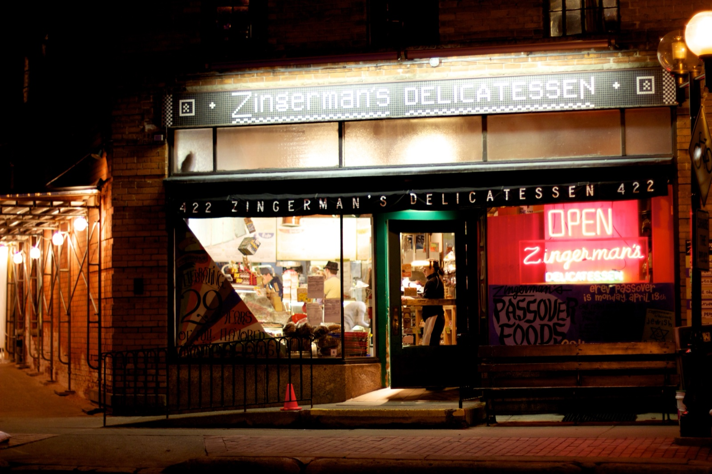
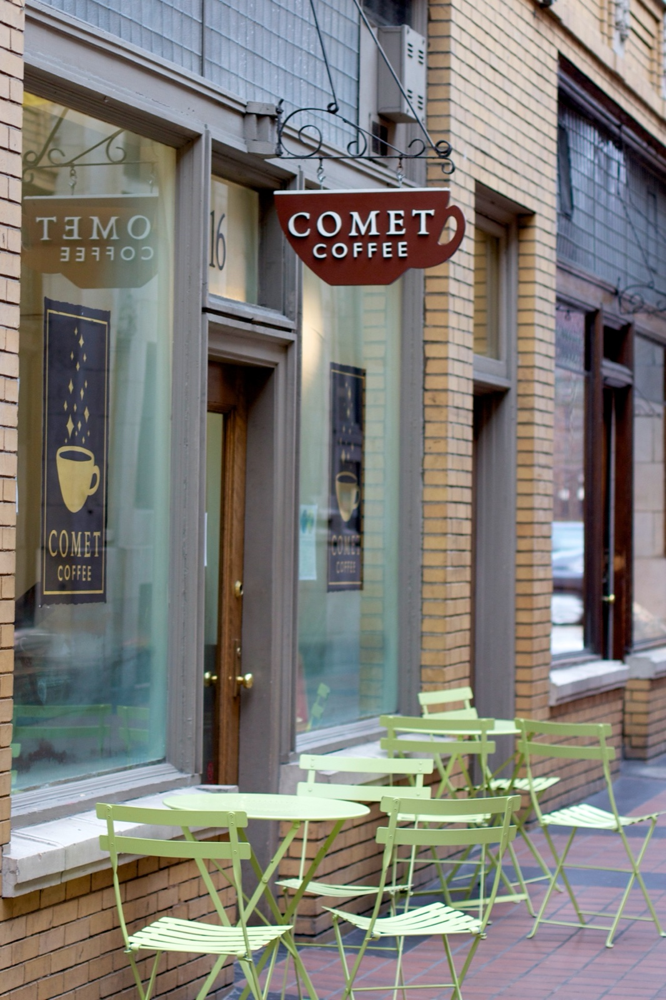
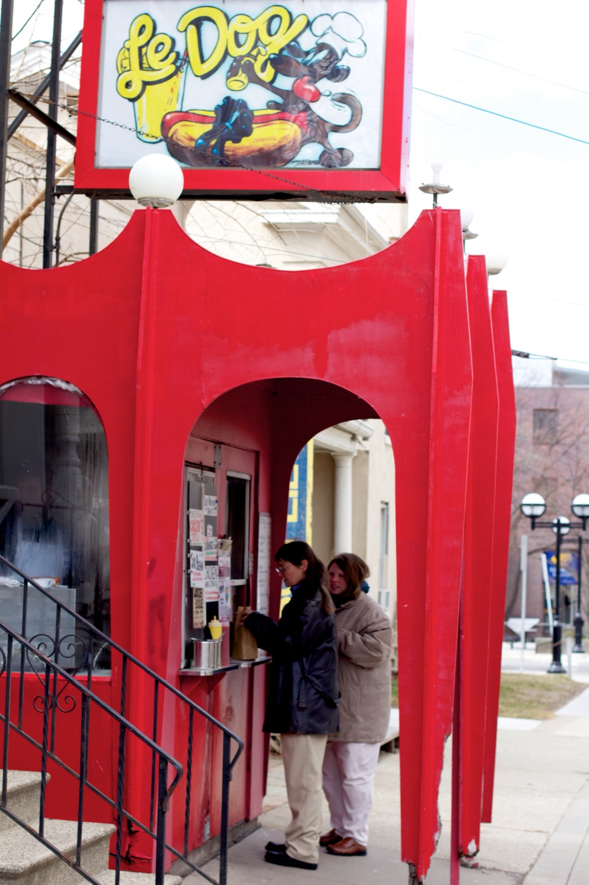
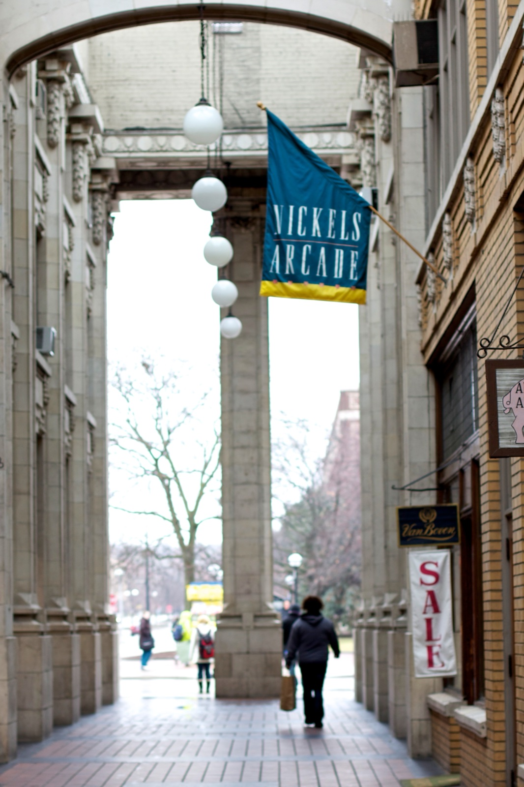

Ann Arbor, Michigan

"Bad dinners go hand in hand with total depravity, while a properly fed man is already half saved."
So cautions the 1912 edition of the Alliance Cook Book: A collection of tested and approved recipes, contributed by the ladies of the Wollaston Unitarian Church. I spent my graduate school spring break in Ann Arbor, Michigan volunteering in the Janice Bluestein Longone Culinary Archive at the University of Michigan. As a library student with an obvious interest in food, the Longone Archive had been on my travel list for quite some time. I had the opportunity to interview Ms. Longone last year and during that conversation she welcomed my interest in a visit. It is difficult to clearly articulate the wonderful experience I had in the archive. Jan is the kind of woman that is simply bursting with energy, ideas, and good stories. She has dedicated much of her adult life to collecting American culinary works that - until quite recently- were largely regarded as unimportant to many institutional collections. We have people like Jan and her husband Daniel to thank for collecting and preserving a portion of this valuable material.
Over ten years ago, the Longone's generously donated their collection to the University of Michigan at Ann Arbor and it is now housed in the Clements Library. (I adore this bas relief quote from Professor Ulrich Phillips on the Clements' facade: "In darkness dwells the people which know its annals not.") The archive is inspiring not only due to its holdings, but also due to the small dedicated staff (like JJ and Betsy) and the large group of dedicated volunteers that work to process, catalog, arrange, and research the pieces in the collection (like Phil, Lily, and John). Some of the volunteers have been there for ten years!
I spent my week primarily working with community cookbooks from the late 19th century and early 20th century. Some of these books are the only known copies and they document the recipes, family names, and sometimes even the addresses of women who lived all over the United States generations ago. The volumes contain illustrations, marital advice, advertisements, and recipes ranging from molasses cookies to "beef tea for invalids." I also had the opportunity to work with a fascinating collection of ephemera including a 1941 menu from the Café de Paris in Chicago signed by Chef Henri Charpentier who popularized the dish Crêpe Suzette. I am incredibly grateful to have had the opportunity to spend time with the wonderful staff and material at the Longone Archive - and I feel incredibly honored to have been able to spend time with Jan Longone herself.

When I wasn't at the archive, I was out in search of delicious food and drink in Ann Arbor. As the home to Zingerman's and a slew of other formidable establishments, this was not a difficult project. Thanks to my friends and readers who offered excellent suggestions before my trip. The deli counter above is a shot from inside Zingerman's Deli, also pictured first in this post. I had always been under the impression that Zingerman's was a single location, but in reality the Zingerman's Deli, Bakehouse, Roadhouse, Creamery, and Coffee Company are spread around Ann Arbor. (You get a t-shirt if you visit them all in one day, though this is sadly quite difficult for those of us traveling on foot.) I was happy to be able to try the superb Roadhouse bread (I hear they consulted the archive when developing the recipe years ago) and the City Goat cheese.
Comet Coffee, unassociated with Zingerman's, is a charming little storefront in Nickels Arcade that pours the best coffee I tasted in Ann Arbor. This is not the place to go if you need a cup in a rush, but a sweet little company that takes itself seriously - and with good reason. Their pale green chairs out front had me wishing for warmer days. It would be the perfect spot to spend an afternoon with a good friend.
By midweek I was ready to brave the buses and I took myself out to Zingerman's Roadhouse. I was tickled to find a notice for a recently passed dinner event, Mark Twain's Feast: "A Tramp Abroad," that Ms. Longone had helped to organize at the restaurant.
The service didn't make me feel at all odd for dining solo, photographing my food, and devouring an entire bowl of Pimento Cheese & Bacon Macaroni. They also brought out the heartiest "amuse bouche" I have ever seen.


Near the end of the week, Betsy, JJ and I made a trip over to Le Dog, a tiny, red hot dog stand that is widely known for their soups - especially the lobster bisque, which is available on Thursdays and Fridays.
It was quite a surprise, but it turns out one of the best lobster dishes I've tasted can be found in Michigan. The soup was the perfect treat for a chilly spring day - warm, rich, and salty. The soups go quickly, so be sure to visit on the early side of the lunch hour and order a Zingerman's pretzel roll on the side.
Ann Arbor is lucky to have half a dozen brewpubs in the middle of the university district. I tried most of them and sampled a variety of beers - but in the end the best beer bar I visited was Ashely's. They don't brew, but they have a huge tap selection and a comfortable environment.
I stayed with two awesome librarians that I found through Airbnb. Unsurprisingly, it turns out that library professionals are excellent and helpful hosts, providing me with everything from beer recommendations to safe running routes. Their sweet cats (that's Basil above) were an added bonus.
It was a wonderful trip and I hope to return to Ann Arbor soon.